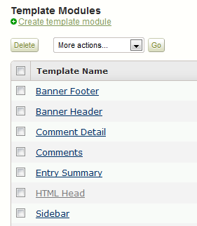

Using MathJax in Movable Type¶
Open Moveable Type Admin interface for the site on which you want to enable MathJax.
In the dashboard menu on the left, open up the Design menu. This should show you the templates you are currently using on the site.
Scroll down to the Template Modules section in the template list and open the HTML Head template.
At the end of the file, insert
<script type="text/javascript" src="http://cdn.mathjax.org/mathjax/latest/MathJax.js?config=TeX-AMS-MML_HTMLorMML"> </script>
to load MathJax from our distributed network service.

Save the file. This will enable MathJax with both TeX and MathML input, so you should be able to start adding mathematical content to your pages. If you need to adjust the configuration, see Configuring MathJax for more details.